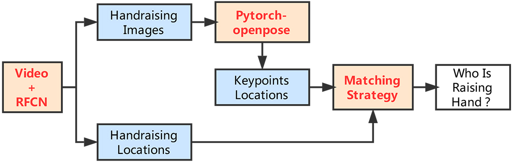

|
Huayi Zhou (周华毅) I'm a PhD student at Department of Computer Science and Engineering, Shanghai Jiao Tong University (SJTU), advised by Prof. Hongtao Lu from year 2020. Previously, I was a master student at SJTU advised by Prof. Ruimin Shen from year 2017 to 2020, and an undergraduate student at Hunan University (HNU) majoring in Computer Science and Technology from year 2013 to 2017. My research interests lie in computer vision (e.g., object detection and pose estimation), also combining with some machine learning techniques such as multi-task learning, domain adaptation and semi-supervised learning. I am committed to pursuing simple yet efficient design, and explore data/label efficient learning. Most of my works is about inferring the physical world (location, association, pose, shape, etc) from RGB images. Representative papers are highlighted. Email / Google Scholar / LinkedIn / Github / Zhihu |

|
News
● [2023.07] I've received the ICME 2023 Best Student Paper Runner Up Award
|
Activities
● Conference Reviewer: CVPR'2024, ICCV'2023, CVPR'2023, ECCV'2022
|
Publications |

|
BPJDet: Extended Object Representation for Generic Body-Part Joint Detection
Huayi Zhou, Fei Jiang, Jiaxin Si, Yue Ding, Hongtao Lu Arxiv, 2023 (submitted to TPAMI) Project / Arxiv / Github The journal version of BPJDet. It has various new functions (Multiple Body-Parts Joint Detection and two downstream applications including Body-Head for Accurate Crowd Counting and Body-Hand for Hand Contact Estimation) |

|
Contrast, Stylize and Adapt: Unsupervised Contrastive Learning Framework for Domain Adaptive Semantic Segmentation
Tianyu Li, Subhankar Roy, Huayi Zhou, Hongtao Lu, Stephane Lathuiliere IEEE/CVF Conference on Computer Vision and Pattern Recognition (CVPR) Workshops, 2023 Paper / Arxiv / Github To overcome the domain gap between synthetic and real-world datasets for semantic segmentation, this paper present CONtrastive FEaTure and pIxel alignment (CONFETI) for bridging the domain gap at both the pixel and feature levels. |

|
Body-Part Joint Detection and Association via Extended Object Representation
Huayi Zhou, Fei Jiang, Hongtao Lu IEEE International Conference on Multimedia and Expo (ICME), 2023 Oral, (Best Student Paper Runner Up Award) Project / Paper / Arxiv / Github / News A novel extended object representation that integrates the center location offsets of body or its parts, and construct a dense one-stage Body-Part Joint Detector (BPJDet). This design is simple yet efficient. |

|
StuArt: Individualized Classroom Observation of Students with Automatic Behavior Recognition And Tracking
Huayi Zhou, Fei Jiang, Jiaxin Si, Lili Xiong, Hongtao Lu IEEE International Conference on Acoustics, Speech and Signal Processing (ICASSP), 2023 Oral Paper / Arxiv / Github StuArt is a novel automatic system designed for the individualized classroom observation. We proposed some pedagogical approaches in signal processing for K-12 education. |

|
DirectMHP: Direct 2D Multi-Person Head Pose Estimation with Full-range Angles
Huayi Zhou, Fei Jiang, Hongtao Lu Arxiv, 2023 Arxiv / Github This paper focuses on the full-range Multi-Person Head Pose Estimation (MPHPE) problem. We firstly construct two benchmarks by extracting GT labels for head detection and head orientation from public datasets AGORA and CMU Panoptic. Then, we propose a direct end-to-end simple baseline named DirectMHP based on YOLOv5. |

|
SSDA-YOLO: Semi-supervised Domain Adaptive YOLO for Cross-Domain Object Detection
Huayi Zhou, Fei Jiang, Hongtao Lu Computer Vision and Image Understanding (CVIU), 2023 Paper / Arxiv / Github This paper presents a novel semi-supervised domain adaptive YOLO (SSDA-YOLO) based method to improve cross-domain detection performance by integrating the compact one-stage stronger detector YOLOv5 with domain adaptation. |
|  |
Who Are Raising Their Hands? Hand-Raiser Seeking Based on Object Detection and Pose Estimation
Huayi Zhou, Fei Jiang, Ruimin Shen Asian Conference on Machine Learning (ACML), 2018 Oral Paper An automatic hand-raiser recognition algorithm to show who raise their hands in real classroom scenarios. |
Experience |
|
Shanghai Jiao Tong University,
Ph.D. student in Computer Science and Engineering Advisor: Prof. Hongtao Lu 2020.9 - Present |
|
|
Qualcomm Wireless Communication Technologies (Shenzhen, China),
Engineering Intern at AI Department, Machine Learning Group (MLGCN) Reporting to Dongyong Zhou, Senior Software Engineer 2019.6 - 2019.10 |
|
|
Shanghai Jiao Tong University,
Academic Master student in Computer Science and Engineering Advisor: Prof. Ruimin Shen 2017.9 - 2020.3 |
|
|
Hunan University,
Bachelor of Engineering in Computer Science and Technology 2013.9 - 2017.6 |
|
The template of this website is borrowed from Jonathan T. Barron. |